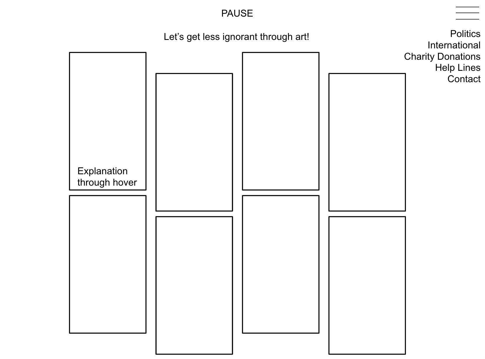
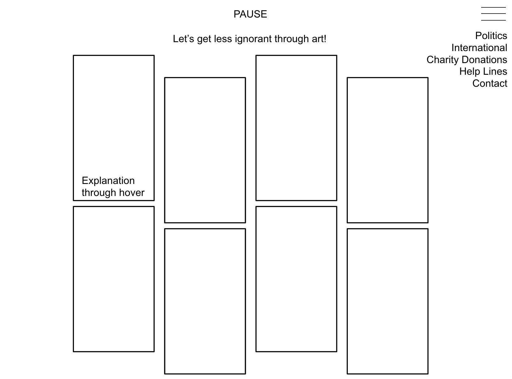

Midterm Idea
Concept
This is a pretty small anecdote, and some might say even useless, but I am going to tell it anyways.
When I was in high school, my group of friends was pretty tight, but still a little toxic.
In I think, my jumior year, a friend of my toxic friend referred to me as ignorant.
I am not sure if this was the exact word that she used, but I believed my toxic friend.
I was a bit confused though, since the only conversation that I had with the friend was a brief one and very friendly.
However, I was a bit intimitaded by that friend, since she was all hair done, pretty, and one of the "cool kids", so I didn't question her since her opinion was so important.
Anyways, I would find myself keeping my distance but also agreeing with her since I unknowingly did not know the political news as much as I should.
So, fast forward to now, I randomly saw this Instagram artist's post of a woman crying with the caption "I'm not a writer, I'm not an artist, I'm just tired.".
This does not relate to the anecdote, but when I saw this, I felt like I am also tired, but why? Why is the woman crying? Why am I responding? Is it political or mental?
I had all of these questions but even though I related it mentally, I wanted to know more politically.
So, that is when I related it to the anecdote.
So, if you understood this far, I basically want to make a website that was pleasing to the eye by using art to explain political issues but also linking specific articles and net art that explains each issue.
Hopefully the website can also allow submissions of art that people can link about a specific event.
The event or political issues can be about Kashmir, Palestine, Sudan, Trunp, LGBT issues.
Also, I will hopefully add a whole page on links to donate for charity, black-owned businesses and businesses that have gone broke because of COVID.
So, basically, we shall all be less ignorant together!
Site Map
As for the site map, it will hopefully be a blend of Instagram, the New York Times, and also WordPress.
The home page, will hopefully be a basic about and contact page with the concept written out.
The first page in the menu will then be links and photos of Instagram pages that can filter or categorize based on political issue but described through net art, graphic design.
The next page would be a donations/charity page link to help services that help during COVID.
There will also probably be helplines for mental health.
Wireframe
For the wireframe, the main concept is to make a easy way for people to get to know the current events and links through art.
So, it will be a grid type link based website for most of the content based websites.
However, for the contact pages, it will be more flex based, with tabs and everything else.
 
